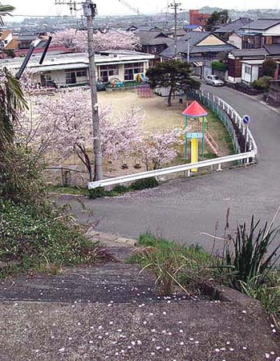

三井万田尋常小学校跡
熊本県荒尾市原万田９５−１ （2003年4月1日撮影）
万田坑の開坑により、明治40年、児童が急増して荒尾尋常小学校が手狭になったため、三井鉱山 が同校の分教場として創設。児童数約110名でスタートした。その後、明治42年、私立三井万田尋常小学校として独立し、荒尾市 立荒尾第四小学校の母体となった。現在ここは荒尾市立万田保育園となっている。（参考資料：写真集 荒尾）

階段は恐らく当時のものと思われる。荒尾第五中学校へ至るが使われていない。
BACK
NEXT